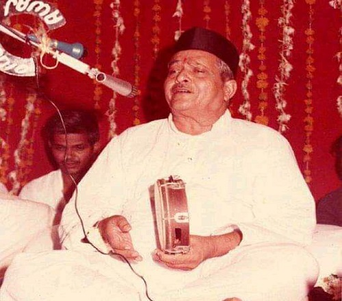

<ion-header>
  <ion-toolbar>
    <ion-buttons slot="start">
      <ion-back-button defaultHref="home"></ion-back-button>
    </ion-buttons>
    <ion-title>Music Player</ion-title>
  </ion-toolbar>
</ion-header>
<!-- <ion-content padding>
  <ion-item>  
    <ion-thumbnail item-left>
      
    </ion-thumbnail>
    <div item-content style="width:100%">
      <p><strong>{{track.title}}</strong> ⚬ <em>{{track.artist}}</em></p>
    </div>
  </ion-item>

  <ion-row id="music-controls">
    <ion-col (click)="play()"><ion-icon name="play"></ion-icon></ion-col>
    <ion-col (click)="pause()"><ion-icon name="pause"></ion-icon></ion-col>
  </ion-row>
</ion-content> -->

<ion-content>


  <div class="homescreen-content">
    <div class="split test1">
      <div scroll="true">
        <!-- File name -->
        <h1 style="color: maroon;font-weight: 900;" text-center>{{ title }}</h1>
        <!-- avatar -->
        <div scrollY="true" text-center class="bhajandiv" *ngIf="lyrics!=''">
         <p>{{ lyrics }}</p>
        </div>
        <div *ngIf="lyrics==''">
          
        </div>
      </div>
    </div>
    <!-- <hr>
    <div class="split test2">
      <div class="centered">
        <h2>TEST</h2>
      </div>
    </div> -->
  </div>


  <!-- align to the bottom of the page -->
  <div style="position: fixed; bottom: 1px; width: 100%;background-color: darkorange;">
    <div style="text-align: center">
      <!-- control bar -->
      <div>
      
        
        <ion-range min="0" max="{{duration}}" [(ngModel)]="position">
          <!--  [disabled]="is_in_play && is_playing"  -->
          <!-- <ion-label slot="start">{{ position*1000 | date:'mm:ss' }}</ion-label>
          <ion-label slot="end" *ngIf="duration == -1">--:--</ion-label>
          <ion-label slot="end" *ngIf="duration != -1">{{ duration*1000 | date:'mm:ss' }}</ion-label> -->
          <ion-label slot="start">{{ display_position }}</ion-label>
          <ion-label slot="end" *ngIf="duration == -1">--:--</ion-label>
          <ion-label slot="end" *ngIf="duration != -1">{{ display_duration }}</ion-label>
        </ion-range>
        <!-- <ion-range *ngIf="isLoad" class="media-status" min="0.01" max="{{duration}}" [(ngModel)]="currentPoint" (ionBlur)="setPoint()"
        color="secondary" pin="true"></ion-range> -->

        <!-- <ion-item>
          <ion-range min="0" max="{{duration}}" [(ngModel)]="duration" color="secondary" (ionChange)="controlProgressBar($event)"></ion-range>
        </ion-item> -->
      </div>
      <ion-grid>

        <ion-row class="ion-align-items-center">
          <ion-col size="2" class="ion-align-self-center">
            <!-- Play/Pause -->
            <ion-fab-button size="small" class="play-pause-btn" (click)="playPrevAudio()" color="info">  <!-- *ngIf="!is_playing" [disabled]="!is_ready" -->
              <ion-icon name="skip-backward"></ion-icon>
            </ion-fab-button>
          </ion-col>
          <ion-col size="2" class="ion-align-self-center">
            <!-- Backwards -->
            <ion-fab-button size="small" class="skip-btn" color="warning" [disabled]="!is_ready || !is_in_play"
              (click)="controlSeconds('back')">
              <ion-icon name="rewind"></ion-icon>
            </ion-fab-button>
          </ion-col>
          <ion-col size="3" class="ion-align-self-center text-center" style="margin-left:20px">
            <!-- Play/Pause -->
            <ion-fab-button class="play-pause-btn" (click)="playRecording()" color="primary" *ngIf="!is_playing"
              [disabled]="!is_ready">
              <ion-icon name="play"></ion-icon>
            </ion-fab-button>

            <ion-fab-button class="play-pause-btn" (click)="pausePlayRecording()" color="secondary"
              *ngIf="is_playing" [disabled]="!is_ready">
              <ion-icon name="pause"></ion-icon>
            </ion-fab-button>
          </ion-col>
          <ion-col size="2" class="ion-align-self-center">
            <!-- Forwards -->
            <ion-fab-button size="small" class="skip-btn" color="warning" [disabled]="!is_ready || !is_in_play"
              (click)="controlSeconds('forward')">
              <ion-icon name="fastforward"></ion-icon>
            </ion-fab-button>
          </ion-col>
          <ion-col size="2" class="ion-align-self-center">
            <!-- Play/Pause -->
            <ion-fab-button size="small" class="play-pause-btn" (click)="playNextAudio()" color="info"> <!-- *ngIf="!is_playing" [disabled]="!is_ready" -->
              <ion-icon name="skip-forward"></ion-icon>
            </ion-fab-button>
          </ion-col>

        </ion-row>

      </ion-grid>

    </div>
  </div>
</ion-content>